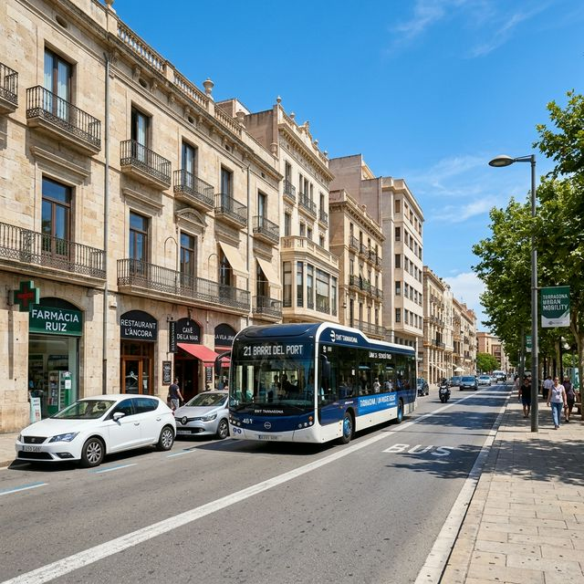
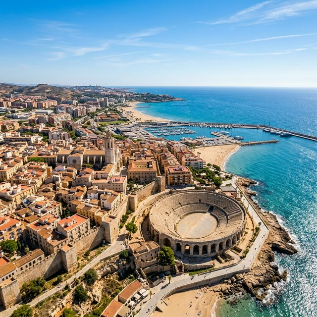
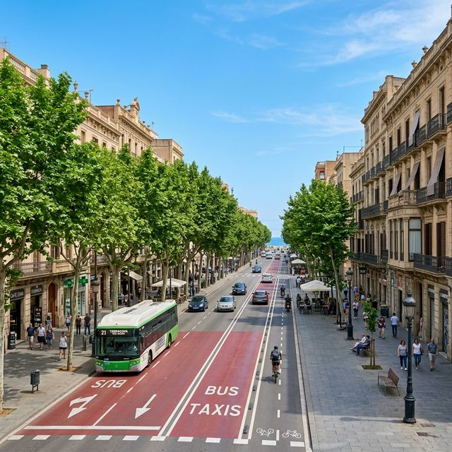
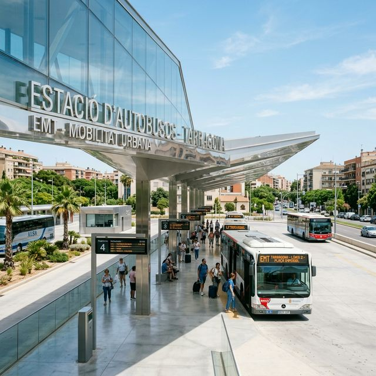
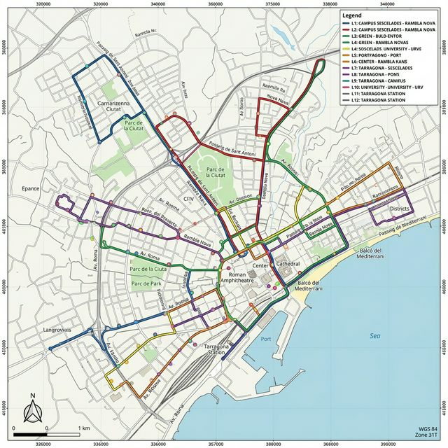

Galería Visual
Imágenes y visuales que capturan la infraestructura urbana y el movimiento del transporte público por los distintos barrios de la ciudad.

Unidad moderna de la EMT en servicio.

Vista aérea de la ciudad y su distribución.

Avenida principal y fluidez de tráfico.

Intercambiador de transporte.

Distribución cartográfica de paradas.